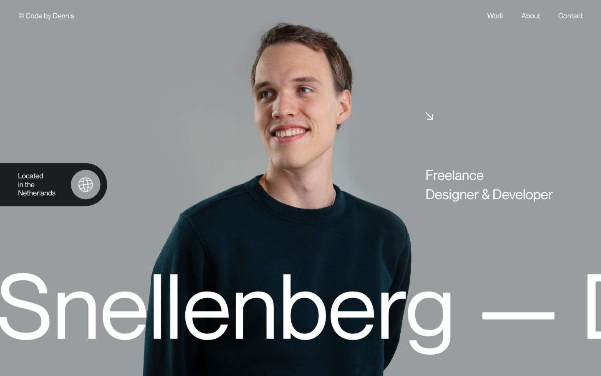
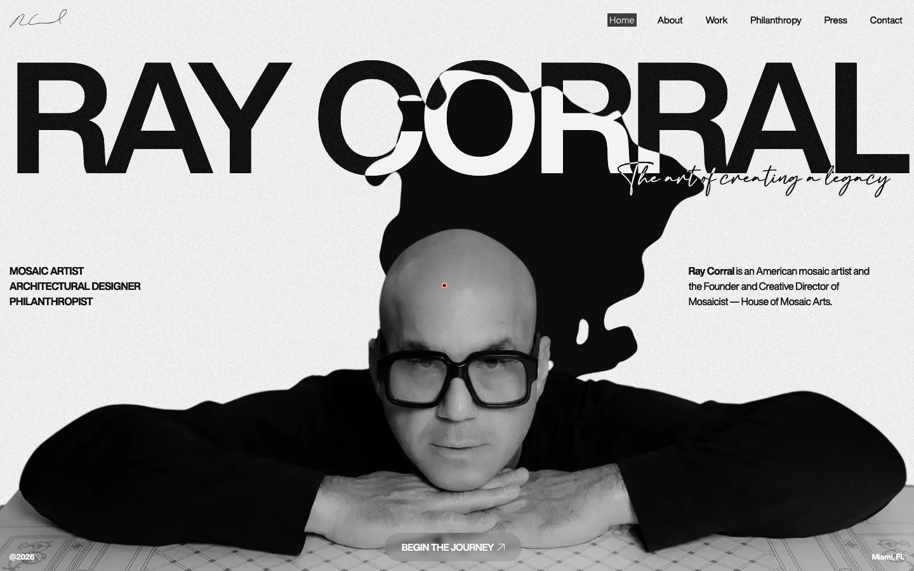
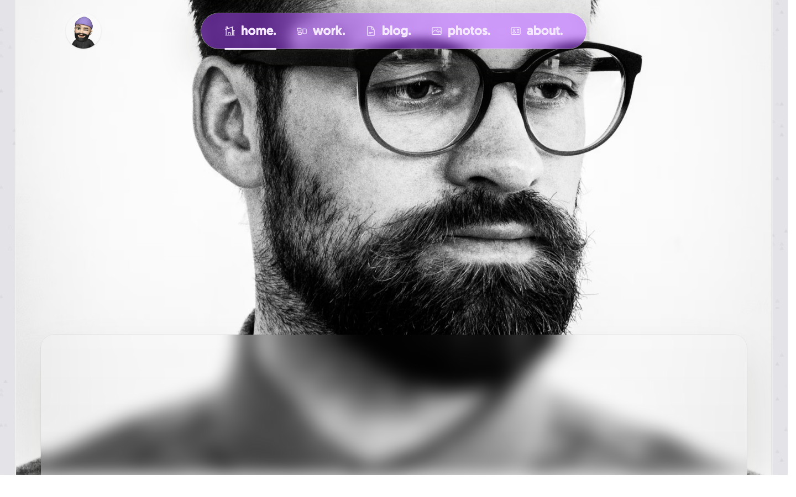
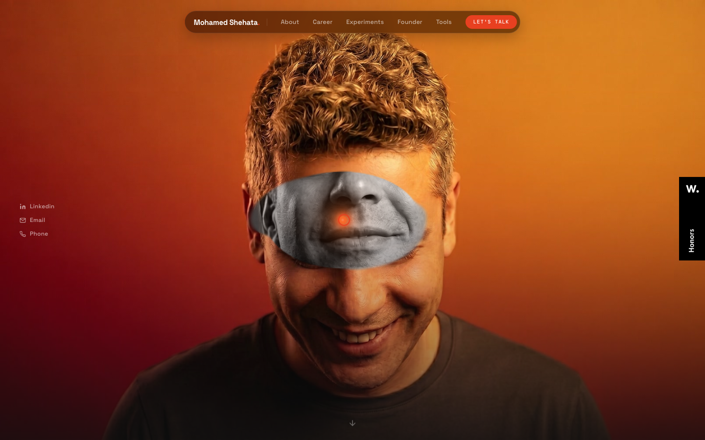
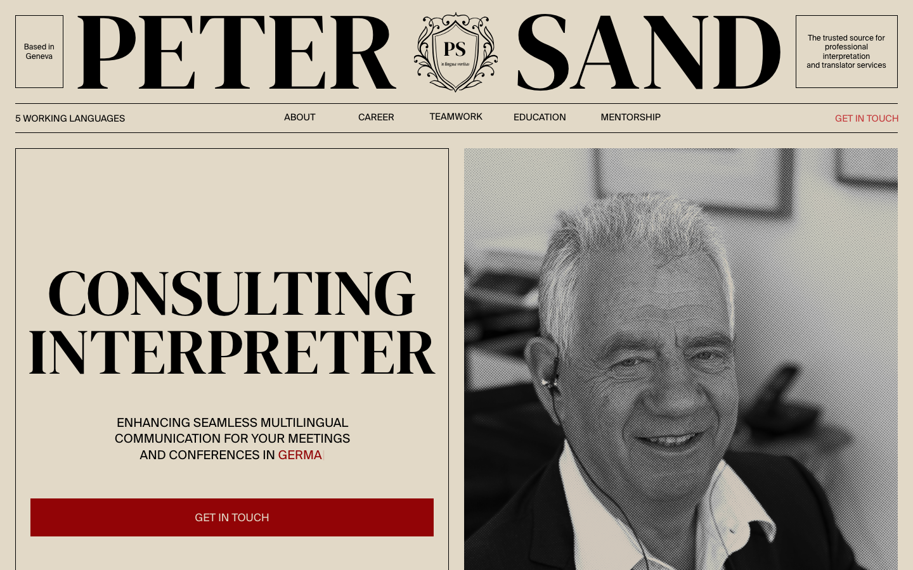
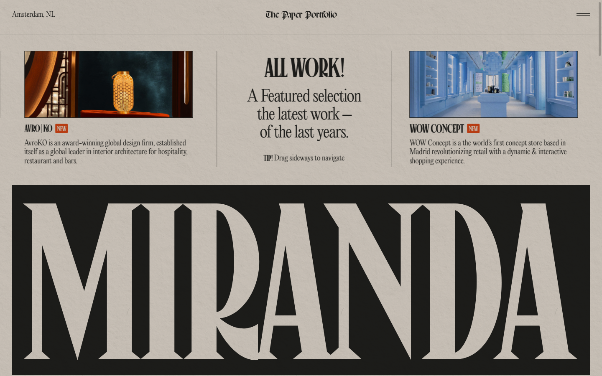
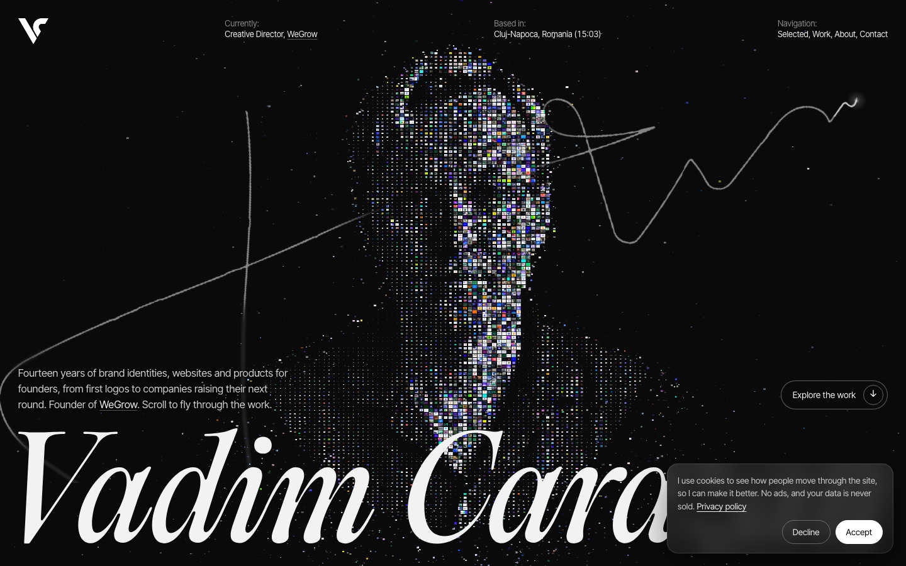
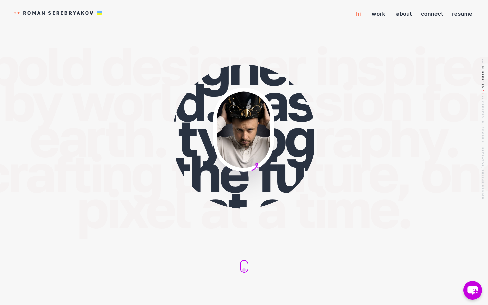
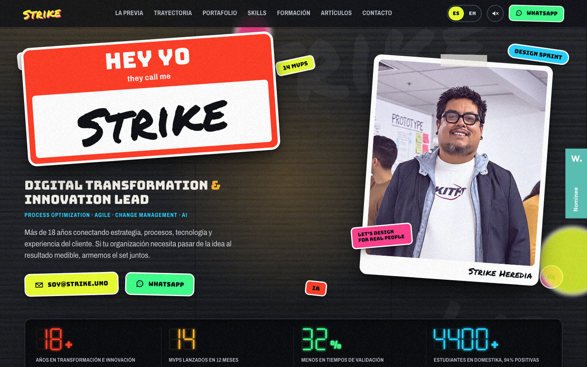
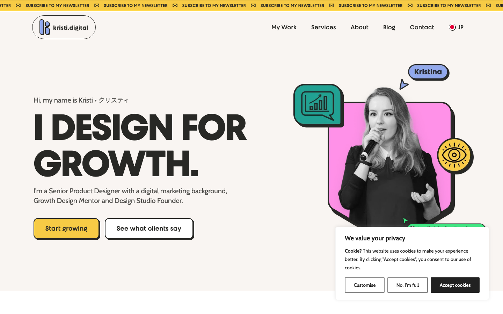

Screenshots taken on 2026-11-01 at 1440 by 900. Grouped by how the face is used. Aesthetics only.
1. The face under the name

Dennis Snellenbergdennissnellenberg.com. Cut-out photo on flat gray. The name at display size crosses the body and runs off the edge. One role line, small. A dark location pill. Nothing else.

Ray Corralraycorral.com. Black and white portrait, arms on the table, looking at you. The name fills the width above the head. An ink blot behind the head. Three role lines at the left, one sentence at the right.
2. The portrait is the whole screen

David Hellmanndavidhellmann.com. Full-bleed black and white face, cropped tight. The nav floats as a pill over the forehead. The content card rises over the chin.

Mohamed Shehatamohamedshehata.net. Full-bleed warm portrait with one visual twist. Name and nav in one floating pill. The twist does the talking.
3. Editorial

Peter Sandpetersand.eu. Newspaper masthead: the name as the title, a rule, a nav line, then a text column and a photo column. Paper ground, serif, one red.

Niccolò Mirandaniccolomiranda.com. Same newspaper idea without a face: the name is the masthead at the bottom of the first screen.
4. The face as material

Vadim Carazanvadimcarazan.com. The portrait is made of thousands of small squares that move. A serif name at the bottom. Dark. The closest to "a person made of information", and also the most common AI look.

Roman Serebryakovroman-loves.design. A round portrait sits inside huge statement text. The text shows through the circle.
5. Loud and handmade

Strike Herediastrike.uno. Scrapbook: a polaroid photo, stickers, a name tag, numbers. Red and green.

Kristina Volchekkristi.digital. Photo cut-out with sticker shapes and a big statement.